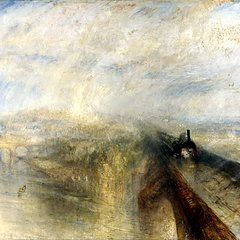
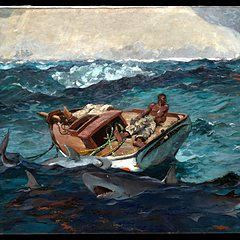
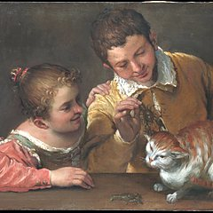
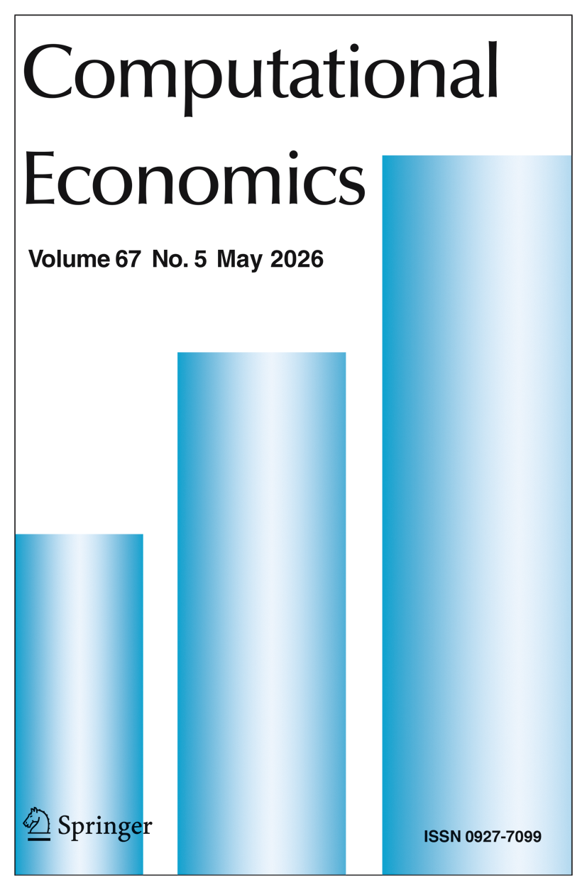
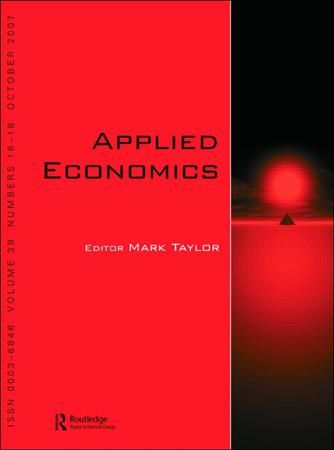
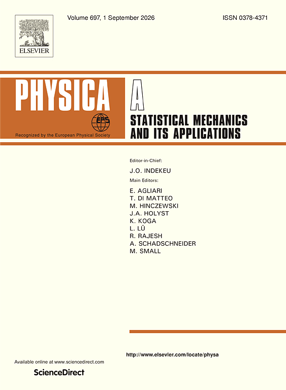
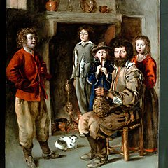
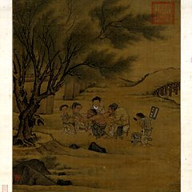
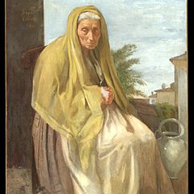
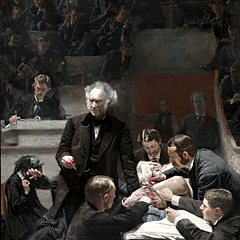

Economics
My research in economics — quantitative history, political science, and development economics.
Selected Papers
1

Journal Publication
Cold Winter, Desperate Heart: Experience of the Great Famine and Drinks
Working Papers
2

01Revise & Resubmit · Cliometrica
How to Achieve Technological Leapfrogging: Evidence from China's Self-Strengthening Movement
Presented at the 11th Quantitative History Annual Conference, Yantai, China
While extensive research diagnoses causes of technological backwardness, little examines how nations effectively bridge such gaps. How can late-industrializing economies accelerate technological catch-up? This study reinterprets China's Self-Strengthening Movement (SSM) to reveal how state-directed institutional adaptation compressed development timelines. Historical evidence shows that SSM-era military investments catalyzed catch-up through two mechanisms: strategic human capital accumulation and pervasive cognitive shifts dismantling technological conservatism. These institutional interventions created foundational capacity, enabling China's subsequent rapid electrification despite late entry. The findings illuminate the critical role of deliberate state plasticity in overcoming initial disadvantages. As China now faces its "Deepseek moment" — confronting new technological frontiers — this analysis offers a blueprint for developing economies seeking to engineer accelerated technological convergence. State-facilitated institutional adaptation emerges as a vital driver for latecomer advancement.

02Reject & Resubmit · Quarterly Journal of Political Science
A Formal Model of Climate Pledges and Accountability
We develop a dynamic model of climate pledges in which voter accountability and the commitments themselves are endogenous. Green and Brown governments alternate in power and announce pledges that their successors inherit. Voters feel anger when implemented effort falls short of an endogenously evolving reference point, and incumbents can strategically prime that anger. We show that moderate accountability leads Green incumbents to overpledge, forcing Brown successors to exert higher effort. Strong accountability, however, backfires: the emotional ratchet induces incumbents to abandon strategic pledging, producing a discontinuous drop in expected effort. We characterize this compliance cliff and relate pledge dynamics to observed reversals, offering a general account of decentralized cooperation.
Work in Progress
2
Do Gender Peer Effects Overlook Heterogeneity?
Presented at the 2nd China Education Economics Seminar, Beijing

Bullying and Personality Formation
Selected for the Asian and Australasian Society of Labour Economics Conference 2026 (AASLE)
All Publications
8
Most of the publications below are course papers written during my undergraduate studies, collected here for completeness.
Cold Winter, Desperate Heart: Experience of the Great Famine and Drinks
Economics & Human Biology
2026
High-Speed Rail Opening and Regional Green Finance Development: A Causal Forest Analysis of Driving Mechanisms and Heterogeneous Effects
Transport Policy

The Risk Transmission Mechanism of Global Stock Markets from the Perspective of Entropy-Riemann Geometry: Theoretical Construction and Empirical Analysis
Computational Economics
2025
How Climate Shocks Affect Stock Market Risk Spillovers: Evidence from Causal Forest Algorithm
Computational Economics

Will Informal Environmental Regulation Become a New Incentive to Reduce Corporate ESG Greenwashing? Empirical Evidence from Public Environmental Concerns
Applied Economics

Nonlinear Heterogeneity Impact of El Nino-Southern Oscillation on Energy Markets: A Global Perspective Analysis
Energy

Multi-Scale Dynamic Correlation and Information Spillover Effects between Climate Risks and Digital Cryptocurrencies: Based on Wavelet Analysis and Time-Frequency Domain QVAR
Physica A: Statistical Mechanics and its Applications
2024
Multi-Scale Dynamic Correlation between Climate Shock and China's Stock Market: Evidence Based on High Frequency Data
Computational Economics
Google Scholar Profile
The complete list of my publications is available on Google Scholar.
Public Health
Applying causal inference methods to health problems in public health.
Working Papers
1

01Working Paper
Early stunting, height recovery, and adolescent nutritional outcomes: a longitudinal cohort study in four countries
Background: Linear growth faltering in early childhood is common, and many children later cross back above the stunting threshold. This height recovery is often read as proof that early damage is undone. Whether it also means nutritional recovery remains unclear.
Objective: We tested whether crossing the height threshold by age 12 signals convergence in adolescent nutritional status, following 8,062 children in the Young Lives cohorts of Ethiopia, India, Peru and Vietnam from age 1 to 15.
Methods: We compared continuous BMI-for-age z scores, thinness and overweight at age 15 across four growth-trajectory groups defined by stunting status at ages 1 and 12. Modified-Poisson and linear models were adjusted for sex and country, with country-by-site clustered covariance. Generalized random forests provided covariate-adjusted contrasts.
Results: Early stunting left a dual legacy across the cohort: higher thinness risk (adjusted risk ratio 1.31, 95% CI 1.18–1.45) and lower overweight risk (0.51, 0.42–0.62). Just over half of those stunted in infancy (51.8%) crossed the height threshold by age 12. Recovery did not close the gap. At 15, recovered children were still more likely to be thin than never-stunted peers (1.19, 1.03–1.36), with BMI-for-age 0.19 SD lower (−0.28 to −0.11). The pattern took opposite forms depending on where a child lived. Thinness dominated in Ethiopia and India, whereas overweight dominated in Peru. Thinness prevalence differed more than 40-fold across the four populations.
Conclusions: Height recovery is a milestone, not a clean bill of health. Early stunting leaves a lasting and unequal mark on adolescent nutrition.
Objective: We tested whether crossing the height threshold by age 12 signals convergence in adolescent nutritional status, following 8,062 children in the Young Lives cohorts of Ethiopia, India, Peru and Vietnam from age 1 to 15.
Methods: We compared continuous BMI-for-age z scores, thinness and overweight at age 15 across four growth-trajectory groups defined by stunting status at ages 1 and 12. Modified-Poisson and linear models were adjusted for sex and country, with country-by-site clustered covariance. Generalized random forests provided covariate-adjusted contrasts.
Results: Early stunting left a dual legacy across the cohort: higher thinness risk (adjusted risk ratio 1.31, 95% CI 1.18–1.45) and lower overweight risk (0.51, 0.42–0.62). Just over half of those stunted in infancy (51.8%) crossed the height threshold by age 12. Recovery did not close the gap. At 15, recovered children were still more likely to be thin than never-stunted peers (1.19, 1.03–1.36), with BMI-for-age 0.19 SD lower (−0.28 to −0.11). The pattern took opposite forms depending on where a child lived. Thinness dominated in Ethiopia and India, whereas overweight dominated in Peru. Thinness prevalence differed more than 40-fold across the four populations.
Conclusions: Height recovery is a milestone, not a clean bill of health. Early stunting leaves a lasting and unequal mark on adolescent nutrition.
Work in Progress
3

Health Insurance in China

Economic Recessions and Heterogeneous Aging

Medical Procurement and Surgical Outcomes in China